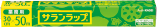
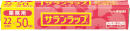

商品紹介
サランラップ®

商品の特長
- 密着性が良く、ハリ・コシがあって丈夫です。
- 酸素を通しにくく、食品の変質を防ぎます。
- 水分を逃さず、新鮮さを保ちます。
- 耐熱温度は140℃、耐冷温度は一60℃。電子レンジ加熱から冷凍保存まで幅広く使えます。
- 香りを保ち、においを通しにくい構造です。
- 酸や塩分にも強いので、梅干し、レモン等を包むのに適しています。
| 商品 | 規格名/規格 | 1本の 希望小売価格 （税抜き） |
パッケージサイズ（mm） | 段ボールサイズ（mm） |
|---|---|---|---|---|
| 重量 | 梱入数／重量 | |||
| JANコード | ITFコード | |||
| 業務用 BOXタイプ 45cm×50m |
1,110円 | 幅468×奥48×高48 | 幅254×奥205×高489 | |
| 558g | 20本／11.6kg | |||
| 4901670110371 | 14901670110378 | |||
|  | 業務用 BOXタイプ 30cm×50m |
740円 | 幅318×奥45×高45 | 幅287×奥234×高331 |
| 378g | 30本／11.8kg | |||
| 4901670110388 | 14901670110385 | |||
|  | 業務用 BOXタイプ 22cm×50m |
580円 | 幅243×奥45×高45 | 幅287×奥234×高257 |
| 288g | 30本／9.0kg | |||
| 4901670110395 | 14901670110392 | |||
| 業務用 BOXタイプ 15cm×50m |
470円 | 幅168×奥45×高44 | 幅288×奥235×高182 | |
| 186g | 30本／5.8kg | |||
| 4901670110401 | 14901670110408 |